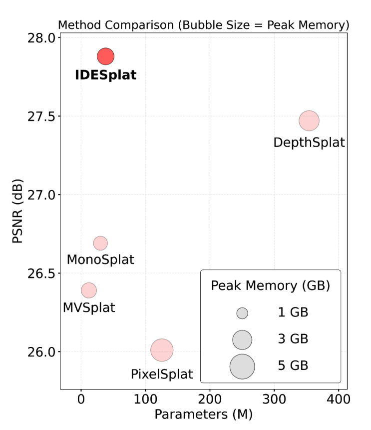
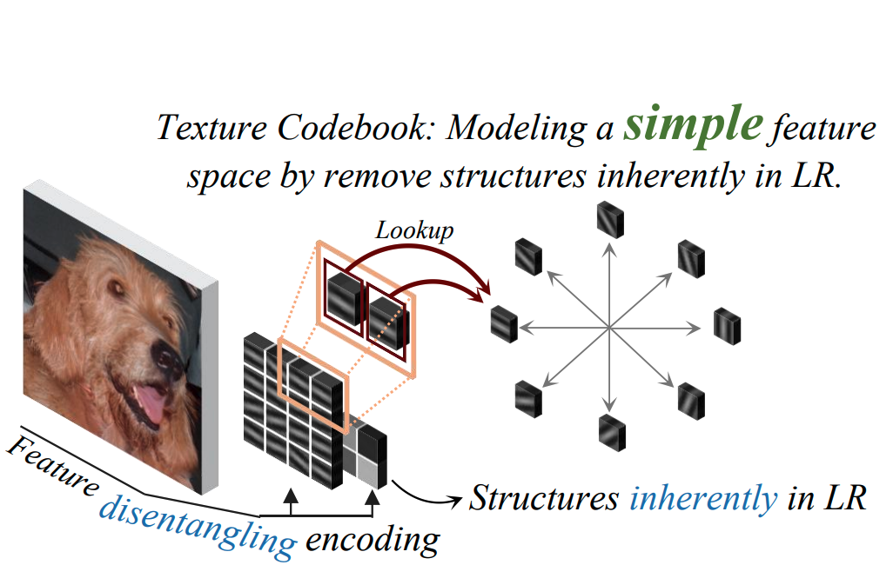
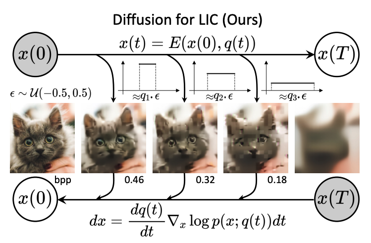
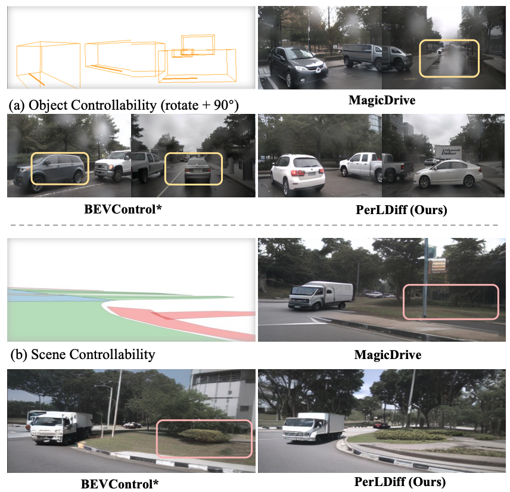

|
Jinhua Zhang I am a Ph.D. candidate at DIG group at University of Electronic Science and Technology of China (UESTC), where I am advised by Prof. Shuhang Gu. I received my bachelor's degree in Computer Science from Shandong University in 2023. From 2023 to 2025, I worked as a research intern at Alibaba Cloud, mentored by Sijia Cai and Hualian Sheng. |

|
ResearchMy research interests lie in computer vision, with a focus on image generation and 3D generation. |
|
 |
IDESplat: Iterative Depth Probability Estimation for Generalizable 3D Gaussian Splatting
Wei Long, Haifeng Wu, Shiyin Jiang, Jinhua Zhang, Xinchun Ji, Shuhang Gu arXiv, 2026 code / arXiv IDESplat achieves SOTA feed-forward 3D reconstruction via iterative depth boosting with extreme parameter and memory efficiency. |
|
 |
Texture Vector-Quantization and Reconstruction Aware Prediction for Generative Super-Resolution
Qifan Li, Jiale Zou, Jinhua Zhang, Wei Long, Xingyu Zhou, Shuhang Gu ICLR, 2026 code / arXiv TVQ&RAP uses texture-specific VQ and reconstruction-aware prediction to slash quantization errors and improve super-resolution fidelity. |

|
MVAR: Visual Autoregressive Modeling with Scale and Spatial Markovian Conditioning
Jinhua Zhang, Wei Long, Minghao Han, Weiyi You, Shuhang Gu ICLR, 2026 code / project page / arXiv MVAR redefines visual autoregression by applying Markovian constraints to scale and spatial, slashing training memory by 3.0x and enabling KV-cache-free inference without sacrificing performance. |
|
 |
Generative Image Compression by Estimating Gradients of the Rate-variable Feature Distribution
Minghao Han, Weiyi You, Jinhua Zhang, Leheng Zhang, Ce Zhu, Shuhang Gu arXiv, 2026 code / arXiv VCD reinterprets image compression as a stochastic forward diffusion path, enabling high-fidelity reconstruction via direct SDE reversal with minimal sampling steps. |
|
 |
PerLDiff: Controllable Street View Synthesis Using Perspective-Layout Diffusion Model
Jinhua Zhang*, Hualian Sheng*, Sijia Cai, Bing Deng, Qiao Liang, Wen Li, Ying Fu, Jieping Ye, Shuhang Gu ICCV, 2025 code / paper / arXiv PerLDiff leverages 3D geometric information within diffusion models to enable robust and precise object-level control for street view image generation. |
|
Thank you to Jon Barron for the source code for the website! |